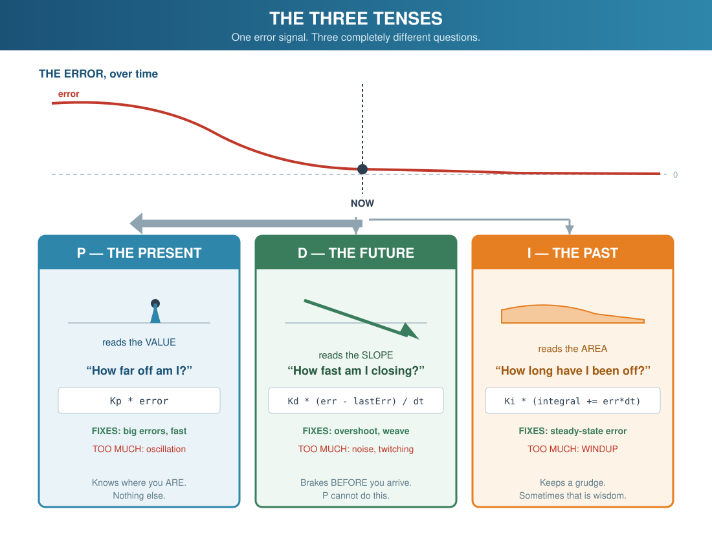
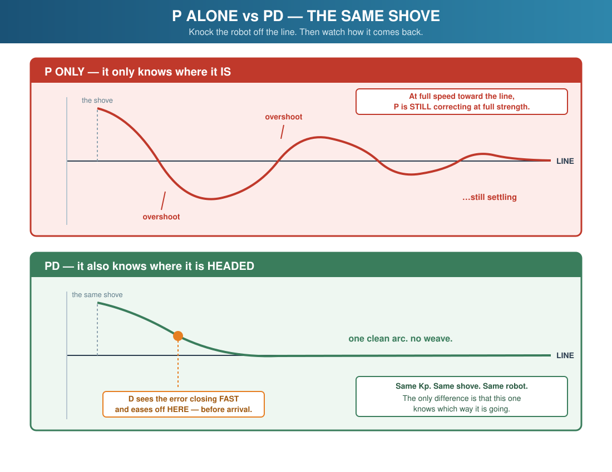
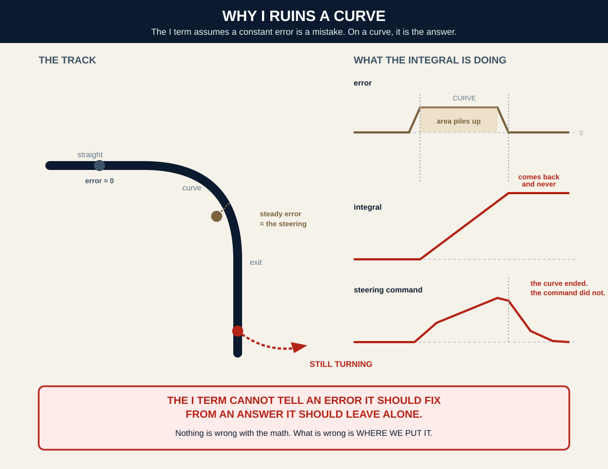

Section 1The Robot That Knows Where It Is and Nothing Else
🔁 Builds on:
the P-controller from Lesson 8 — the four lines below are unchanged; this lesson teaches what they cannot see.
Back in Lesson 8 you wrote four lines of code that made the robot follow a line, and they
worked. Here they are again, unchanged, still running inside your project today:
int position = readLinePosition();
int error = position - LINE_CENTER;
int correction = currentKp * error;
motors.setSpeeds(BASE_SPEED + correction, BASE_SPEED - correction);
That is proportional control. It asks exactly one question — how far off am I,
right now? — and it steers in proportion to the answer. It is the whole reason your robot
can drive a track at all.
And it is stuck in the present tense.
P knows where you are. It does not know where you are heading, and it does not know where
you have been. Everything that is still wrong with your line follower — the weave on the
straights, the overshoot out of a corner, the way it runs slower and slower as the battery dies
— is a consequence of that one blind spot.
This lesson gives the controller two more tenses. It also gives you something you have never had
before: a way to tell whether your tuning actually helped.
⚠️ The honest warning up front. Most PID chapters end with a student turning
knobs, squinting at the robot, and saying “that looked smoother.” That is not tuning. That is
hoping. Half this lesson is about building an instrument that replaces the squint with a
number.
correction = (how far off) + (how long off) + (how fast closing)
Three pieces of information, combined into one decision. And the cleanest way to hold them
in your head is not as three formulas. It is as three tenses:
Term
Tense
The question it asks
What it can fix
P — Proportional
Present
How far off am I right now?
Large errors, quickly
D — Derivative
Future
How fast is the error closing?
Overshoot and oscillation
I — Integral
Past
How long have I been wrong?
A small error that never dies
🔑 KEY TERM — PID Controller: a control algorithm that
computes a correction from three views of the same error — its present value (P), its accumulated
history (I), and its rate of change (D).

[GRAPHIC 15.1] The three tenses. P reads the error now; D reads its slope; I reads the area under it.
3.2 P — the present
You already own this one. Lesson 8 wrote it.
int position = readLinePosition(); // 0 - 4000, center is 2000int error = position - LINE_CENTER; // how far off, and which wayfloat p = currentKp * error; // steer in proportion
The problem with P alone: it knows where you are and nothing else. So it drives at
full correction right up until the moment you arrive — and then you sail straight past. Correct
hard the other way. Sail past again. That is the weave, and no value of Kp makes
it go away: too small and the robot is lazy, too large and the weave becomes a wobble.
Analogy. Walk toward a wall with your eyes closed while a friend calls out
your distance: “ten feet… five… two…” You know exactly where you are at every moment.
You still hit the wall, because nobody told you how fast you were closing.
3.3 D — the future
The derivative term looks at how fast the error is changing:
float derivative = (error - lastError) / dt; // how fast the error is closingfloat d = currentKd * derivative;
lastError = error; // today becomes the past
🔑 KEY TERM — Derivative: the rate of change of a value over
time. The derivative of the error tells you whether you are getting closer or further away, and how
fast — which is a statement about the future.
Situation
Derivative
What it means
Error was 100, now 50
Negative
Closing fast. Ease off — you are about to arrive.
Error was 50, now 100
Positive
Opening up. Push harder.
Error was 50, still 50
Zero
Not changing. D has nothing to say.
Why D kills the weave: as the robot races back toward the line, the error is
shrinking fast, so the derivative is a large negative number. D subtracts from the correction
before the robot reaches center. It brakes early. P cannot do this, because braking early
requires knowing something P has never known: which way you are headed.
Analogy. You do not park a car by driving at the space full speed and
stamping the brake at the last instant. You slow down as you approach. D is the part of you
that does that.

[GRAPHIC 15.2] The same step, two controllers: P alone oscillates around the line; PD glides onto it.
📘 D is often called the damper, and that is
exactly right. It is the shock absorber. Take the shocks off a car and every bump becomes a bounce
that lasts a block.
3.4 I — the past
The integral term adds memory. It accumulates the error over time:
integral = integral + (error * dt); // add up every moment you were wrongfloat i = currentKi * integral;
🔑 KEY TERM — Integral: the accumulated sum of a value over
time — the area under the error curve. It answers “how much total wrongness has piled up?”
What I is for. Suppose a bias in your drivetrain makes the robot pull slightly right. P
sees a small error and produces a small correction, which shrinks the error — which shrinks the
correction. P settles at the point where its correction exactly cancels the bias, and that point has
a non-zero error. P converges on being permanently, quietly wrong. This is
steady-state error, and P structurally cannot remove it: with zero error, P produces zero
output.
I can. Every pass that you are even slightly off, a little more gets added to the total, so a
small error that never dies grows into a large command. I is the only term that can drive a
steady error to zero.
⚠️ And I is the most dangerous term in the equation. If the error
stays large for a while — the robot is picked up, the line disappears, a wheel is blocked — the
integral keeps piling up into an enormous number. When the robot finally recovers, that stored
command fires all at once and the robot lunges. This is integral windup, and it is why I
gets a whole warning to itself.
3.5 The reckoning — what this robot actually needs
Everything in 3.2 to 3.4 is standard, correct control theory. Now we are going to do what
this book always does: take the theory to the actual hardware and see what survives.
Start with the number I is supposed to fix. On this robot, Kp is around 0.1, and the
drivetrain bias P has to cancel is roughly the size of your TRIM — call it 8 speed
units. At the settling point:
out of a ±2000 half-scale. That is 4%. That is the size of the prize.
Now the price. Ask what the line loop's error looks like on a curve. To hold a
constant-radius curve, the robot must steer constantly — and the only way P produces a constant
steering command is to sit at a constant, non-zero error. On a curve, a steady error is not a
mistake. It is the answer.
The I term cannot tell the difference. It sees a steady error, concludes
that nobody is fixing it, and starts piling up a correction. Every curve on the track winds it up.
And when the curve ends and the robot needs to go straight, the integral is still holding a command
that says keep turning. It overshoots the exit of every corner.
It is being paid 80 units. It is being charged the exit of every curve on the course.
There is a second bill. When the line goes out from under the sensors, readLine()
does not return “I don't know.” It saturates: it pins to 0 or 4000, whichever side it last
saw, and holds there. The error slams to ±2000 and stays. P handles that fine — a hard turn,
then recovery. An integrator treats it as two full seconds of maximum wrongness that it is duty-bound
to repay.
So here is the verdict this lesson ships, and it is not a preference:
▶ The LINE loop gets P and D. Not I. A curve holds a steady error on purpose, and I
mistakes the answer for a mistake.
▶ The SPEED loop gets the I. A tired battery makes you slow always — a constant
error, in one direction, with no honest excuse. Nothing else can fix it.
Same math. Opposite verdict. The difference lives in the world,
not in the code.

[GRAPHIC 15.3] Integral windup on a curve. The steady error IS the steering command - and I keeps adding to it.
You are not going to take my word for this. In section 7D you will build the I term into
the line loop and watch it fail on a curve, and in 7E you will move it to the speed loop and
watch it save a run on a dying battery. Same term. Same three lines. The robot will tell you.
3.6 The three failures, and their names
Failure
What you see
Cause
Fix
Integral windup
A huge lunge after the robot is picked up, blocked, or loses the line
Error stayed large; the integral piled up with nowhere to spend it
Clamp the integral itself, not just the output — and reset it on re-entry
Derivative kick
A violent spike the instant the target changes
A step change in the setpoint makes (error - lastError) enormous for one pass
Take the derivative of the measurement, not the error
Noise amplification
Twitchy, jittery steering that gets worse as you raise Kd
D is a rate. Sensor noise is a rate too — a huge one. D cannot tell them apart.
Lower Kd, or low-pass filter the derivative (Challenge 2)
Line following gets a free pass on derivative kick: our setpoint is
LINE_CENTER, and it never changes. Remember the name anyway — the first time you put a
PID on something with a moving target, it will be the first thing that bites you.
Section 4 · TimingThe Clock You Have Been Using Cannot Do This
Good news first: PID needs no new hardware. Same line sensors, same encoders, same
motors. Everything in this lesson is a change of mind, not a change of parts.
Bad news second: one of the instruments you have been using since Lesson 2 is not good enough
for this job, and you are about to find out why.
4.1 D and I are rates. A rate needs a dt.
Look again at the two new terms:
float derivative = (error - lastError) / dt; // divided by time
integral = integral + (error * dt); // multiplied by time
Both of them are divided by or multiplied by dt — the length of one
trip through loop(). So before either term can mean anything, you have to answer a
question nobody has made you answer before:
How long does one pass
through your loop actually take?
4.2 Measure the loop, and the loop bites back
Here is the fact that decides this lesson. Your five line sensors are RC sensors:
the library charges them up and then times how long they take to discharge. Dark surfaces
discharge slowly, bright ones quickly — the timing is the measurement.
And initFiveSensors() sets that timing ceiling to 2000 microseconds. So:
Fact
Consequence
One readLinePosition() can block for up to 2000 µs
Your loop takes roughly 2–3 milliseconds per pass
Black discharges slower than white
The loop period is not even constant — it depends on what is under the robot
millis() resolves to 1 millisecond
Asked to measure a 2 ms interval it answers “2”. Or “3”. Or “0”.
⚠️ WARNING
You cannot divide by zero.
A derivative computed as (error - lastError) / dt where dt came from
millis() is not “a bit imprecise.” On a fast pass it is undefined, and on every
other pass it is quantized to 2 or 3 — a ±50% measurement error that has nothing to do with the
robot and everything to do with the ruler.
millis() is the wrong instrument for this loop. It cannot see it.
micros() resolves to 4 microseconds. Against a 2000 µs loop, that is a
0.2% ruler. That is the clock this lesson runs on, and it is the only one aboard that can do the
job.
You will prove this yourself in 7A — with the motors off, by hand, watching
both numbers on the screen at the same time.
4.3 Rollover, and why the subtraction is safe
micros() counts up in an unsigned long and wraps back to zero
about every 70 minutes. That sounds like a landmine. It is not — as long as you subtract:
// ===== THE CLOCK (NEW for Lesson 15) =====// D and I are both RATES. A rate is a change DIVIDED BY A TIME.// So before you can compute either one, you have to know dt - honestly.//// This loop takes about 2 to 3 MILLISECONDS. The line sensors alone need// up to 2000 microseconds to discharge (initFiveSensors sets that timeout),// and they take LONGER over black than over white - so the loop period is// not even constant. It depends on what is underneath you.//// millis() resolves to ONE millisecond. Ask it to measure a 2-millisecond// interval and it answers "2". Or "3". Or "0".//// You cannot divide by "0".//// micros() resolves to 4 microseconds. It is the only clock on this robot// that can see this loop.float deltaTimeSec() {
unsignedlong now = micros();
unsignedlong elapsed = now - lastMicros; // unsigned math survives rollover
lastMicros = now;
if (elapsed < DT_MIN_US) elapsed = DT_MIN_US;
return elapsed / 1000000.0;
}
Unsigned subtraction wraps the same way the counter does, so now - lastMicros
comes out right even across the rollover. Store the timestamps and subtract them. Never store
an elapsed total and compare it to a target — that is where rollover bugs live.
DT_MIN_US is an engineering limit, not a blank. It ships with
a value and a reason: 100 µs sits far below this loop's real period, so it can only ever fire
if something is already badly wrong. Changing a limit means beating its reason.
Section 5 · Code WalkthroughFour Gains, Three Buttons
5.1 The rule that governs this whole lesson
followLine() keeps its name and every one of its call sites.
Only the question it asks gets better.
There is no followLinePD(). There is no followLinePID(). When Lesson 11
upgraded handleGap() from a stopwatch to an odometer, it kept the name, the call site,
and the TRIM — and every state that called it got better for free. Same move here. The rescue
sweep, the gap crossing, the intersection run: none of them know this lesson happened, and all of
them get a better controller.
5.2 The new constants
// ===== PID CONTROL (NEW for Lesson 15) =====// Lesson 8 gave you P. P is the only term that can be wrong in the// present tense - it knows WHERE YOU ARE and nothing else.//// P reacts to WHERE YOU ARE (the present)// D reacts to WHERE YOU ARE GOING (the future)// I reacts to WHERE YOU HAVE BEEN (the past)//// KP is already above. Lesson 8 put it there.constfloat KD = 0.0; // <-- YOUR NUMBER. Section 7C finds it.// 7B gives you Ku and Tu. Start at KP * Tu / 8.// The derivative DIVIDES BY dt. If dt is ever zero, the controller// detonates. This is a floor, and it is an ENGINEERING LIMIT, not a// blank: 100 us sits far below this loop's real period (~2000 us), so// it can only fire if something is already badly wrong.constunsignedlong DT_MIN_US = 100; // microseconds// ===== THE TUNING RIG (NEW for Lesson 15) =====// You cannot tune what you cannot score. "That looked smoother" is not// a measurement. Every run is the same length, because two gains are// only comparable if the runs were.constunsignedlong TUNING_RUN_MS = 10000; // 0 = no bell, run until B// ===== SPEED CONTROL (NEW for Lesson 15) =====// The LINE loop gets P and D.// The SPEED loop gets the I - because a tired battery is a CONSTANT// error with no honest excuse, and I is the only term that can see it.constfloat TARGET_SPEED_CMS = 25.0; // The speed you ASKED forconstfloat KP_SPEED = 0.0; // <-- YOUR NUMBER. 7E finds it. Try 2 and work from there.constfloat KI_SPEED = 0.0; // <-- YOUR NUMBER. 7E finds it. Try 0.5 and work from there.// A ceiling on what the speed loop may add to BASE_SPEED. An integrator// with no ceiling is a runaway: it keeps adding, forever, until the// motors saturate and it can no longer come back down.constint SPEED_TRIM_MAX = 80;
Three blanks, and every one of them is spent.KD,
KP_SPEED, KI_SPEED all ship as 0 with the starting guess in
the comment. You find the numbers in section 7. Nobody hands them to you, because the number that is
right for your robot on your track is not the number that is right for mine.
5.3 The state the controller has to carry
P is stateless — it reads the sensor and answers. D and I are not. D needs to remember the
last error. I needs to remember every error. Both need to remember when.
// ===== THE PID STATE (NEW for Lesson 15) =====float currentKd = KD; // The SECOND knob. currentKp was the first.float lastError = 0; // Where the error was last pass - THE PASTfloat dtSec = 0; // How long THIS pass took. One clock, two loops.unsignedlong lastMicros = 0; // When the last pass was. MICROseconds. See below.
5.4 followLine(), upgraded
void followLine() {
// SAME NAME. SAME CALL SITE. Only the QUESTION got better.int position = readLinePosition();
int error = position - LINE_CENTER;
dtSec = deltaTimeSec(); // ONE clock read per pass// P - THE PRESENT. How far off am I right now?float p = currentKp * error;
// D - THE FUTURE. How fast is the error closing?// If I am already racing back toward the line, D eases off the wheel// BEFORE I sail past it. P can never do that: P knows where I am, not// where I am HEADED. This is the term that kills the weave.float d = currentKd * (error - lastError) / dtSec;
lastError = error; // the present becomes the pastint correction = (int)(p + d);
int leftSpeed = currentBase + correction;
int rightSpeed = currentBase - correction;
leftSpeed = constrain(leftSpeed, -MAX_SPEED, MAX_SPEED);
rightSpeed = constrain(rightSpeed, -MAX_SPEED, MAX_SPEED);
motors.setSpeeds(leftSpeed, rightSpeed);
}
Read the shape of it. Four lines of Lesson 8 are still in there, untouched. What is new is
one clock read, one subtraction, and one memory. That is the entire derivative term.
5.5 The tuning bench
This is the part most PID chapters leave out, and it is the part that makes the rest of
them work. You cannot tune what you cannot score.
Three numbers, one run:
Number
What it measures
Reads on
MAE
The mean of |error| over the whole run
How far off the robot lived
PEAK
The largest |error| of the run
The worst single moment
WEAVE
Error sign-flips per second
How much it hunted
// ===== THE SCOREBOARD (NEW for Lesson 15) =====// MAE - mean |error|. How far off the robot LIVED.// PEAK - max |error|. The worst single moment.// WEAVE - error sign-flips per second. How much it HUNTED.unsignedlong runStart = 0;
long runSumAbs = 0;
long runSamples = 0;
int runPeak = 0;
int runCross = 0;
int runLastSign = 0;
int knob = 0; // which gain the buttons are turning
// ===== THE SCORER (NEW for Lesson 15) =====void runReset() {
runSumAbs = 0; runSamples = 0; runPeak = 0; runCross = 0; runLastSign = 0;
runStart = millis();
}
// Called once per pass, with the error followLine() just computed.void runSample(int error) {
int a = abs(error);
runSumAbs += a;
runSamples++;
if (a > runPeak) runPeak = a;
int sign = (error > 0) - (error < 0);
if (sign != 0 && runLastSign != 0 && sign != runLastSign) runCross++;
if (sign != 0) runLastSign = sign;
}
// The selected gain. Same row on every screen.void showKnob() {
display.gotoXY(0, 4);
if (knob == 0) { display.print(F("Kp ")); display.print(currentKp, 2); }
elseif (knob == 1) { display.print(F("Kd ")); display.print(currentKd, 3); }
elseif (knob == 2) { display.print(F("KpS ")); display.print(currentKpSpeed, 2); }
else { display.print(F("KiS ")); display.print(currentKiSpeed, 2); }
display.print(F(" "));
}
void showScore() {
long mae = runSamples ? (runSumAbs / runSamples) : 0;
float secs = runSamples ? (millis() - runStart) / 1000.0 : 1.0;
display.setLayout21x8();
display.clear();
display.gotoXY(0, 0); display.print(F("MAE ")); display.print(mae);
display.gotoXY(0, 1); display.print(F("PEAK ")); display.print(runPeak);
display.gotoXY(0, 2); display.print(F("WEAVE ")); display.print(runCross / secs, 1);
// Ziegler-Nichols, computed on the robot.// At the Kp where it oscillates and will NOT settle (that is Ku), the// WEAVE number gives you the oscillation period: Tu = 2 / WEAVE.// The classical starting point is then Kp = 0.6*Ku and Kd = Kp*Tu/8.//// It is a STARTING POINT, not an answer. Z-N is famously aggressive.// It puts you in the right ZIP code. You still have to hill-climb.float weave = runCross / secs;
if (weave > 0.2) {
float tu = 2.0 / weave;
display.gotoXY(0, 3);
display.print(F("TRY Kd ")); display.print(currentKp * 0.6 * tu / 8.0, 3);
}
showKnob();
display.gotoXY(0, 6); display.print(F("LOWER MAE = BETTER"));
display.gotoXY(0, 7); display.print(F("A- C+ holdA tapC B"));
}
void endRun() {
motors.setSpeeds(0, 0);
currentState = RUN_REPORT; // B stops the RUN. It does not cancel the SCORE.
showScore();
}
The bell. Every run is the same length — TUNING_RUN_MS.
This is not a detail. Two gains are only comparable if the runs were. A 12-second run and a
7-second run produce two MAE numbers that cannot be compared, and a student who does not know that
will spend an afternoon chasing noise.
5.6 Four gains, three buttons
// The knob UI. Three buttons, more gains than buttons.// A = turn the selected gain DOWN// C = turn the selected gain UP// hold A, tap C = select the NEXT gainvoid adjustKnobs() {
if (buttonA.isPressed() && buttonC.getSingleDebouncedPress()) {
knob = (knob + 1) % 4;
showKnob();
return;
}
if (buttonA.isPressed() && !buttonC.isPressed()) {
if (knob == 0) { currentKp -= 0.02; if (currentKp < 0.02) currentKp = 0.02; }
elseif (knob == 1) { currentKd -= 0.005; if (currentKd < 0) currentKd = 0; }
elseif (knob == 2) { currentKpSpeed -= 0.50; if (currentKpSpeed < 0) currentKpSpeed = 0; }
else { currentKiSpeed -= 0.10; if (currentKiSpeed < 0) currentKiSpeed = 0; }
showKnob();
delay(200);
}
if (buttonC.isPressed() && !buttonA.isPressed()) {
if (knob == 0) { currentKp += 0.02; if (currentKp > 1.0) currentKp = 1.0; }
elseif (knob == 1) { currentKd += 0.005; if (currentKd > 0.5) currentKd = 0.5; }
elseif (knob == 2) { currentKpSpeed += 0.50; if (currentKpSpeed > 20.0) currentKpSpeed = 20.0; }
else { currentKiSpeed += 0.10; if (currentKiSpeed > 5.0) currentKiSpeed = 5.0; }
showKnob();
delay(200);
}
}
▶ A tuning rig you have to recompile is not a tuning rig.
Every gain in this project is adjustable on the robot, between runs, without a cable. That is
why sections 7B, 7C and 7E have no new code to download: they are the same build, run with
different knobs. The only rungs that change the program are 7A (which does not drive) and 7D (which
is designed to fail).
5.7 The doorway — where the reset has to live
// ===== THE DOORWAY (NEW for Lesson 15) =====// The integral REMEMBERS and the derivative COMPARES. Both are holding a// number from the last time we were on the line.//// But we may have been GONE. Crossing a gap. Taking a turn. Dodging a box.// The whole time, readLine() was pinned to 0 or 4000 and the clock kept// running. Whatever those terms are holding now is a LIE.//// FOLLOWING_LINE has FOUR doors into it. A reset you have to remember at// four separate places is a bug with a four-day fuse.//// So put it IN THE DOORWAY. Now there is exactly one way in.void resetPID() {
lastError = 0;
speedIntegral = 0; // forget the past - it was not your fault
lastSpeedCounts = averageCounts(); // and do not bill us for the distance we drove while away
lastMicros = micros(); // do not bill D for the time we spent away
}
void enterFollowing() {
resetPID();
currentState = FOLLOWING_LINE;
showStatus();
}
📘 The general rule, and it is worth more than this lesson: if something
must happen every time you enter a state, put it in the doorway — not in the four places
that walk through it. A reset you have to remember at four call sites is a bug with a four-day
fuse: it works today, and it fails the first time somebody adds a fifth door.
5.8 The speed loop — where I finally belongs
// ===== THE SPEED LOOP (NEW for Lesson 15) =====// How fast are we ACTUALLY going? Ask the encoders. Same averageCounts()// from Lesson 6, same COUNTS_PER_CM. You already own this instrument.float measureSpeedCmPerSec(float dt) {
long now = averageCounts();
long moved = now - lastSpeedCounts;
lastSpeedCounts = now;
return (moved / COUNTS_PER_CM) / dt;
}
// HERE is where the I term finally earns its keep.//// A tired battery does not make you wrong SOMETIMES. It makes you slow// ALWAYS - a constant error, in one direction, that never goes away.// P looks at that error and produces a correction proportional to it,// which leaves a smaller error... which produces a smaller correction.// P converges on being permanently, quietly wrong.//// I is the term that keeps a grudge. Every pass it adds the error to a// running total, so a small error that never dies grows into a large// command. I is the ONLY term that can drive a steady error to zero.//// On the LINE, that grudge was a liability: a curve holds a steady error// ON PURPOSE, and I mistook the answer for a mistake.// On the BATTERY, the grudge is the whole point.void updateSpeedLoop(float dt) {
float actual = measureSpeedCmPerSec(dt);
float error = TARGET_SPEED_CMS - actual;
speedIntegral += error * dt;
// Clamp the MEMORY, not just the output. An integrator you only clamp on// the way out keeps growing on the inside, and then refuses to come back// down when you finally need it to. That is integral WINDUP.float iMax = SPEED_TRIM_MAX / (currentKiSpeed > 0.01 ? currentKiSpeed : 0.01);
speedIntegral = constrain(speedIntegral, -iMax, iMax);
speedTrim = (int)(currentKpSpeed * error + currentKiSpeed * speedIntegral);
speedTrim = constrain(speedTrim, -SPEED_TRIM_MAX, SPEED_TRIM_MAX);
currentBase = constrain(BASE_SPEED + speedTrim, 0, MAX_SPEED);
}
// ===== THE SPEED LOOP STATE (NEW for Lesson 15) =====float currentKpSpeed = KP_SPEED;
float currentKiSpeed = KI_SPEED;
float speedIntegral = 0; // THE PAST. This is the term that remembers.int speedTrim = 0; // What the speed loop is adding right nowlong lastSpeedCounts = 0;
int currentBase = BASE_SPEED; // BASE_SPEED is what you ASKED for.// currentBase is what it TAKES to get it.
Notice what measureSpeedCmPerSec() is built out of: averageCounts()
from Lesson 6, COUNTS_PER_CM from Lesson 6, and the dt that
followLine() already measured this pass. You did not buy a single new instrument.
You wired three you already owned into a loop that closes.
💡 Clamp the memory, not just the output. Look at the iMax line.
It is tempting to clamp only speedTrim on the way out — but then the integral keeps
growing on the inside, invisibly, and when you finally need it to come back down it has
thousands of accumulated units to unwind first. The robot stays wrong for seconds after the cause is
gone. That is windup, and clamping the output does not prevent it.
BRAIN CHECK 01 · MENTAL KNOWLEDGE CHECK — Answer From Your Head
That is the reading done. Before you touch the robot, answer these five from your head — no scrolling back, no robot, no help. Then click to compare. If your answer and the reveal disagree, the section number tells you where to re-read.
1. P alone drives at full correction right up to the moment the robot arrives at the line — and then sails straight past it. Name the one thing P has never known. (§3.2)
How fast the error is closing. P looks at where you are and nothing else, so the correction it commands at one centimetre off the line is the same whether the robot is racing toward centre or drifting away from it. It is still commanding a hard correction at the instant it arrives, so it carries through, overshoots, and corrects hard the other way — the weave. The lesson’s own analogy: walk toward a wall with your eyes closed while a friend calls out your distance. You know exactly where you are at every moment. You still hit the wall, because nobody told you how fast you were closing.
2. What does the derivative actually measure — and what does a large negative derivative tell the controller to do? (§3.3)
The derivative measures the rate at which the error is changing, computed as (error - lastError) / dt. A large negative derivative means the error is shrinking fast — the robot is closing on the line quickly — so D subtracts from the correction before the robot gets there. It brakes early. That is why D kills the weave and P cannot: braking early requires knowing which way you are headed, which is the one thing P has never known. You do not park a car by driving at the space full speed and stamping the brake at the last instant.
3. A bias in your drivetrain makes the robot pull slightly right. P settles at a small, permanent error and stays there forever. Explain why P structurally cannot remove it — and name the term that can. (§3.4)
P’s output is proportional to the error, so as the error shrinks the correction shrinks with it. P comes to rest at exactly the point where its correction cancels the bias — and that point has a non-zero error, because with zero error P produces zero output and the bias wins again. This is steady-state error, and it is not a tuning failure: no value of Kp removes it, because the arithmetic that leaves it there is the same arithmetic that makes P work. I can. Every pass the robot is even slightly off, a little more is added to a running total, so a small error that never dies grows into a large command. I is the only term that can drive a steady error to zero.
4. Both new terms carry dt — one multiplies by it, one divides by it. Say which is which, and say what dt actually is. (§4.1)
The derivative divides: (error - lastError) / dt. The integral multiplies: integral + (error * dt). And dt is the length of one trip through loop() — how long this single pass took. Both terms are rates, and a rate is a change measured against a time, so neither one means anything until that time is a real number. That is the question this lesson makes you answer and no earlier lesson ever did.
5. You are about to upgrade followLine() from P to PD. State the rule this whole lesson runs on — what happens to the function’s name, and to every place that calls it. (§5.1)
The name stays and every call site stays. Only the question the function asks gets better. There is no followLinePD() and no followLinePID(). This is the same move Lesson 11 made when handleGap() went from a stopwatch to an odometer: it kept the name, the call site and the TRIM, and every state that called it got better for free. The rescue sweep, the gap crossing and the intersection run do not know this lesson happened — and all of them end up with a better controller anyway.
Section 6 · Build ItFrom P to PD
Start from your finished Lesson 14 project. Every step below compiles clean. If a step does
not compile, fix it before you write the next one — that is the whole reason the steps are
this small.
The byte counts are real. They are what the compiler produced, and a few of them are going to say
something you should notice.
Step 1 — Start from Lesson 14 (25,640 bytes)
Open the Project Maker, choose Lesson 15, and download the starting project — or
just keep working in your Lesson 14 folder. It is the same eight files, unchanged. Compile it now,
before you touch anything, and write the number down. That number is your control.
Step 2 — The new constants (25,640 bytes — unchanged)
Add the block from 5.2 to RobotConfig.h, and add the new state to the enum:
enum RobotState {
STOPPED, // Motors off, waiting for B
FOLLOWING_LINE, // P-control driving - Lesson 8's whole job
AT_INTERSECTION, // Stopped on a marker, announcing the decision
EXECUTING_TURN, // Turning on Lesson 6's encoder machinery
OBSTACLE_DETECTED, // From Lesson 10: something is in the way - stop and plan
AVOIDING_OBSTACLE, // From Lesson 10: driving the avoidance maneuver
RETURNING_TO_LINE, // From Lesson 10: maneuver done, hunting for the line again
GAP_CROSSING, // From Lesson 11: driving blind across a gap, counting the distance
LINE_LOST, // From Lesson 11: drove the whole budget and never found the line
ENTERING_ZONE, // NEW for Lesson 13: silver strip seen - through the door
SWEEPING_ZONE, // NEW for Lesson 13: lawnmower rows, no line, instruments only
VICTIM_FOUND, // NEW for Lesson 13: stopped short of the wall - someone is here
RUN_REPORT // NEW for Lesson 15: the run is over - here is the score
};
The byte count did not move. That is correct. A const
that nothing reads yet costs nothing — the compiler simply does not emit it. Constants are free
until something spends them.
Step 3 — The clock (25,640 bytes — still unchanged!)
Add the PID state from 5.3, and add deltaTimeSec() from 4.3, above showStatus().
// ===== THE CLOCK (NEW for Lesson 15) =====// D and I are both RATES. A rate is a change DIVIDED BY A TIME.// So before you can compute either one, you have to know dt - honestly.//// This loop takes about 2 to 3 MILLISECONDS. The line sensors alone need// up to 2000 microseconds to discharge (initFiveSensors sets that timeout),// and they take LONGER over black than over white - so the loop period is// not even constant. It depends on what is underneath you.//// millis() resolves to ONE millisecond. Ask it to measure a 2-millisecond// interval and it answers "2". Or "3". Or "0".//// You cannot divide by "0".//// micros() resolves to 4 microseconds. It is the only clock on this robot// that can see this loop.float deltaTimeSec() {
unsignedlong now = micros();
unsignedlong elapsed = now - lastMicros; // unsigned math survives rollover
lastMicros = now;
if (elapsed < DT_MIN_US) elapsed = DT_MIN_US;
return elapsed / 1000000.0;
}
⚠️ WARNING
You just wrote a whole function and the program did not get one
byte bigger. Why?
Because nothing calls it. The linker looked at deltaTimeSec(), saw that no code
anywhere reaches it, and threw it away before it ever got into the binary. Your source file has a
clock in it. Your robot does not.
This is a good thing to see happen on purpose once, so that you recognize it the day it
happens to you by accident.
Now replace the body of followLine(). Same name. Same call sites. Nothing else in the project changes.
void followLine() {
// SAME NAME. SAME CALL SITE. Only the QUESTION got better.int position = readLinePosition();
int error = position - LINE_CENTER;
dtSec = deltaTimeSec(); // ONE clock read per pass// P - THE PRESENT. How far off am I right now?float p = currentKp * error;
// D - THE FUTURE. How fast is the error closing?// If I am already racing back toward the line, D eases off the wheel// BEFORE I sail past it. P can never do that: P knows where I am, not// where I am HEADED. This is the term that kills the weave.float d = currentKd * (error - lastError) / dtSec;
lastError = error; // the present becomes the pastint correction = (int)(p + d);
int leftSpeed = BASE_SPEED + correction;
int rightSpeed = BASE_SPEED - correction;
leftSpeed = constrain(leftSpeed, -MAX_SPEED, MAX_SPEED);
rightSpeed = constrain(rightSpeed, -MAX_SPEED, MAX_SPEED);
motors.setSpeeds(leftSpeed, rightSpeed);
}
+162 bytes, and now the clock is in the binary. Something calls
it, so it survives. Flash this and drive: with KD still at 0, the robot behaves exactly
as it did in Lesson 14 — because currentKd is 0 and the D term contributes nothing.
The machinery is in, and it is switched off. That is exactly where you want to be before you
start tuning.
Add the scoreboard globals and the scorer from 5.5, and the knob UI from 5.6. Then wire them into loop(). In STOPPED, the old A/C handling gets replaced by one call:
case STOPPED: {
checkBattery(); // A+B battery report - only while stopped, never mid-run
adjustKnobs(); // NEW for Lesson 15 - A- C+ , hold A and tap C to pick the gainif (buttonB.getSingleDebouncedPress()) { // B = gofor (int count = 3; count > 0; count--) {
display.setLayout21x8();
display.clear();
display.gotoXY(0, 0);
display.print(count);
buzzer.playNote(NOTE_C(5), 150, 15);
delay(1000);
}
display.clear();
display.gotoXY(0, 0);
display.print(F("GO!"));
buzzer.playNote(NOTE_C(6), 300, 15);
delay(500);
runReset(); // a fresh scorecard
currentState = FOLLOWING_LINE;
showStatus();
}
break;
}
The scorer at this stage has only two gains to turn — the speed loop does not exist yet:
// The selected gain. Same row on every screen.void showKnob() {
display.gotoXY(0, 4);
if (knob == 0) { display.print(F("Kp ")); display.print(currentKp, 2); }
else { display.print(F("Kd ")); display.print(currentKd, 3); }
display.print(F(" "));
}
// The knob UI. Three buttons, more gains than buttons.// A = turn the selected gain DOWN// C = turn the selected gain UP// hold A, tap C = select the NEXT gainvoid adjustKnobs() {
if (buttonA.isPressed() && buttonC.getSingleDebouncedPress()) {
knob = (knob + 1) % 2;
showKnob();
return;
}
if (buttonA.isPressed() && !buttonC.isPressed()) {
if (knob == 0) { currentKp -= 0.02; if (currentKp < 0.02) currentKp = 0.02; }
else { currentKd -= 0.005; if (currentKd < 0) currentKd = 0; }
showKnob();
delay(200);
}
if (buttonC.isPressed() && !buttonA.isPressed()) {
if (knob == 0) { currentKp += 0.02; if (currentKp > 1.0) currentKp = 1.0; }
else { currentKd += 0.005; if (currentKd > 0.5) currentKd = 0.5; }
showKnob();
delay(200);
}
}
And showStatus() gives up its hard-wired Kp: line — the knob row now shows whichever gain you have selected:
void showStatus() {
display.setLayout21x8();
display.clear();
display.gotoXY(0, 0);
// NEW for Lesson 10 - name the state. Seven names, one switch.switch (currentState) {
case STOPPED: display.print(F("STOPPED")); break;
case FOLLOWING_LINE: display.print(F("FOLLOWING")); break;
case AT_INTERSECTION: display.print(F("INTERSECT")); break;
case EXECUTING_TURN: display.print(F("TURNING")); break;
case OBSTACLE_DETECTED: display.print(F("OBSTACLE!")); break;
case AVOIDING_OBSTACLE: display.print(F("AVOIDING")); break;
case RETURNING_TO_LINE: display.print(F("SEEKING")); break;
case GAP_CROSSING: display.print(F("GAP")); break;
case LINE_LOST: display.print(F("LOST")); break;
case ENTERING_ZONE: display.print(F("ZONE!")); break; // NEW for Lesson 13case SWEEPING_ZONE: display.print(F("SWEEPING")); break; // NEW for Lesson 13case VICTIM_FOUND: display.print(F("VICTIM!")); break; // NEW for Lesson 13case RUN_REPORT: display.print(F("SCORE")); break; // NEW for Lesson 15
}
showKnob(); // NEW for Lesson 15 - the selected gain
display.gotoXY(0, 6);
display.print(F("A- C+ B:Go Px:"));
display.print(readFrontProx()); // NEW for Lesson 10 - is the sensor alive?
display.print(F(" "));
}
Then a new case, and two new lines in the one you already have:
case RUN_REPORT: {
// The run is over. Here is what it cost you.
adjustKnobs();
if (buttonB.getSingleDebouncedPress()) { // B = run it again. Same track, same bell.
runReset();
currentState = FOLLOWING_LINE;
showStatus();
}
break;
}
case FOLLOWING_LINE: {
if (killSwitchPressed()) { endRun(); break; } // B = STOP - you still get the score// THE BELL. Every run is the same length, or two scores mean nothing.if (TUNING_RUN_MS > 0 && millis() - runStart >= TUNING_RUN_MS) {
endRun();
break;
}
// PRIORITY 1 - a crash is worse than a missed turn. Check it FIRST.if (checkForObstacle()) {
motors.setSpeeds(0, 0); // Stop FIRST - then think
currentState = OBSTACLE_DETECTED;
break;
}
// PRIORITY 2 - the rescue zone door. Check it BEFORE isLineVisible():// silver clamps to 0 on the calibrated channel, so to the old code// the door reads as a GAP - a hole in the world - and handleGap()// would drive straight through it, hunting for a line that is not// coming back.if (silverDetected()) {
motors.setSpeeds(0, 0); // Stop FIRST - then think
currentState = ENTERING_ZONE;
break;
}
if (isLineVisible()) {
followLine();
runSample(lastError); // followLine() just wrote it. Score the pass.// PRIORITY 3 - the course is asking for a turn
IntersectionType seen = checkForIntersection();
if (seen != NO_INTERSECTION) {
motors.setSpeeds(0, 0); // Stop FIRST - then think
pendingTurn = seen;
currentState = AT_INTERSECTION;
}
} else {
// PRIORITY 4 - nothing special: just drive
handleGap();
}
break;
}
Read what the kill switch does now. B still stops the robot instantly
— that is untouchable and it always will be. But it no longer throws away the run. It stops
the wheels and shows you the score. Stopping a run is not the same as cancelling it.
Add resetPID() and enterFollowing() above setup():
// ===== THE DOORWAY (NEW for Lesson 15) =====// The integral REMEMBERS and the derivative COMPARES. Both are holding a// number from the last time we were on the line.//// But we may have been GONE. Crossing a gap. Taking a turn. Dodging a box.// The whole time, readLine() was pinned to 0 or 4000 and the clock kept// running. Whatever those terms are holding now is a LIE.//// FOLLOWING_LINE has FOUR doors into it. A reset you have to remember at// four separate places is a bug with a four-day fuse.//// So put it IN THE DOORWAY. Now there is exactly one way in.void resetPID() {
lastError = 0;
lastMicros = micros(); // do not bill D for the time we spent away
}
void enterFollowing() {
resetPID();
currentState = FOLLOWING_LINE;
showStatus();
}
Now find every place that says currentState = FOLLOWING_LINE; followed by showStatus(); — there are four — and replace each pair with a single call:
case EXECUTING_TURN: {
if (pendingTurn == GO_LEFT) turnLeft();
elseif (pendingTurn == GO_RIGHT) turnRight();
elseif (pendingTurn == DEAD_END) turnAround();
pendingTurn = NO_INTERSECTION;
enterFollowing(); // one door, and the reset lives in itbreak;
}
case ENTERING_ZONE: {
display.setLayout21x8();
display.clear();
display.gotoXY(0, 2);
display.print(F("RESCUE ZONE"));
buzzer.playNote(NOTE_C(6), 200, 15);
if (!COMPETITION_MODE) delay(600); // demo pause - free in practice, 0.6s in a match
The other three:
adjustKnobs(); // NEW for Lesson 15 - A- C+ , hold A and tap C to pick the gainif (buttonB.getSingleDebouncedPress()) { // B = gofor (int count = 3; count > 0; count--) {
display.setLayout21x8();
display.clear();
display.gotoXY(0, 0);
display.print(count);
buzzer.playNote(NOTE_C(5), 150, 15);
delay(1000);
}
display.clear();
display.gotoXY(0, 0);
display.print(F("GO!"));
buzzer.playNote(NOTE_C(6), 300, 15);
delay(500);
runReset(); // a fresh scorecard
enterFollowing(); // one door, and the reset lives in it
}
break;
}
case RUN_REPORT: {
// The run is over. Here is what it cost you.
adjustKnobs();
if (buttonB.getSingleDebouncedPress()) { // B = run it again. Same track, same bell.
runReset();
enterFollowing(); // one door, and the reset lives in it
}
break;
}
// Found it! The gap is over. Hand control back to P-control.if (isLineVisible()) {
enterFollowing(); // one door, and the reset lives in itbreak;
}
if (isLineVisible()) {
motors.setSpeeds(0, 0);
enterFollowing(); // one door, and the reset lives in itbreak;
}
Sixty-eight bytes to close a hole you cannot see yet. Cross a gap and
come back: the line was gone for half a second, readLine() was pinned at 4000 the whole
time, and lastError is still holding that number. The first pass back on the line
computes a derivative against a value from a different world. The robot flinches. Now it
cannot.
Step 7 — The I term, on the speed loop (28,034 bytes, +878)
Add the speed-loop state and updateSpeedLoop() from 5.8. Then three small edits. First, the knob UI grows from two gains to four:
// The knob UI. Three buttons, more gains than buttons.// A = turn the selected gain DOWN// C = turn the selected gain UP// hold A, tap C = select the NEXT gainvoid adjustKnobs() {
if (buttonA.isPressed() && buttonC.getSingleDebouncedPress()) {
knob = (knob + 1) % 4;
showKnob();
return;
}
if (buttonA.isPressed() && !buttonC.isPressed()) {
if (knob == 0) { currentKp -= 0.02; if (currentKp < 0.02) currentKp = 0.02; }
elseif (knob == 1) { currentKd -= 0.005; if (currentKd < 0) currentKd = 0; }
elseif (knob == 2) { currentKpSpeed -= 0.50; if (currentKpSpeed < 0) currentKpSpeed = 0; }
else { currentKiSpeed -= 0.10; if (currentKiSpeed < 0) currentKiSpeed = 0; }
showKnob();
delay(200);
}
if (buttonC.isPressed() && !buttonA.isPressed()) {
if (knob == 0) { currentKp += 0.02; if (currentKp > 1.0) currentKp = 1.0; }
elseif (knob == 1) { currentKd += 0.005; if (currentKd > 0.5) currentKd = 0.5; }
elseif (knob == 2) { currentKpSpeed += 0.50; if (currentKpSpeed > 20.0) currentKpSpeed = 20.0; }
else { currentKiSpeed += 0.10; if (currentKiSpeed > 5.0) currentKiSpeed = 5.0; }
showKnob();
delay(200);
}
}
Second, the doorway learns to forget the speed integral too:
// ===== THE DOORWAY (NEW for Lesson 15) =====// The integral REMEMBERS and the derivative COMPARES. Both are holding a// number from the last time we were on the line.//// But we may have been GONE. Crossing a gap. Taking a turn. Dodging a box.// The whole time, readLine() was pinned to 0 or 4000 and the clock kept// running. Whatever those terms are holding now is a LIE.//// FOLLOWING_LINE has FOUR doors into it. A reset you have to remember at// four separate places is a bug with a four-day fuse.//// So put it IN THE DOORWAY. Now there is exactly one way in.void resetPID() {
lastError = 0;
speedIntegral = 0; // forget the past - it was not your fault
lastSpeedCounts = averageCounts(); // and do not bill us for the distance we drove while away
lastMicros = micros(); // do not bill D for the time we spent away
}
Third — and this is the one line that matters — followLine() stops steering around a fixed base speed and starts steering around the speed the loop is actually holding:
int leftSpeed = currentBase + correction;
int rightSpeed = currentBase - correction;
and the speed loop runs once per pass, on the clock followLine() already read:
if (isLineVisible()) {
followLine();
runSample(lastError); // followLine() just wrote it. Score the pass.
updateSpeedLoop(dtSec); // and followLine() just timed it. One clock, two loops.
Two control loops, one clock, one pass. The line loop decides
where to steer. The speed loop decides how fast. They share a dt because
they share a loop(), and reading the clock twice in one pass would give the second
reader a dt of nearly zero — which is exactly the bug section 4 warned you about,
sneaking back in through a different door.
Everything below is worthless if you skip this. Three gains, tuned by feel, on a track that
keeps changing, with a battery that keeps dying, is not an experiment. It is a superstition.
⚠️ WARNING
The three rules. Break any one of them and your numbers mean nothing.
Same track, same start line, every run. Mark the start with tape.
Same battery state. You cannot compare a run on a fresh pack
to a run on a tired one — and Lesson 14 already taught you that the pack drops under load.
Charge, then tune.
Change ONE gain at a time. Two knobs at once and you will
never know which one did it. This is the same rule that made you calibrate one turn before you
calibrated a square.
7A — Build the strip chart. Watch your own dt. (26,116 bytes)
Motors stay off. You are going to push the robot across the line with your hand and
watch the numbers. You cannot tune a derivative you have never seen.
Add this function, and call it from the top of the STOPPED case:
// ===== 7A: THE STRIP CHART (Lesson 15, section 7A) =====// No motors. No driving. Push the robot across the line with your hand// and WATCH. You cannot tune a derivative you have never seen, and you// cannot compute one until you know your own dt.//// Watch two numbers:// ERR - how far off center the line is, right now// dt us - how long ONE pass through this loop actually took//// Write dt down. Then look at what millis() would have said about it.void stripChart() {
int position = readLinePosition();
int error = position - LINE_CENTER;
dtSec = deltaTimeSec();
unsignedlong us = (unsignedlong)(dtSec * 1000000.0);
display.setLayout21x8();
display.gotoXY(0, 0); display.print(F("STRIP CHART "));
display.gotoXY(0, 2); display.print(F("ERR ")); display.print(error); display.print(F(" "));
display.gotoXY(0, 3); display.print(F("dERR ")); display.print(error - lastError); display.print(F(" "));
display.gotoXY(0, 5); display.print(F("dt us ")); display.print(us); display.print(F(" "));
display.gotoXY(0, 6); display.print(F("dt ms ")); display.print(us / 1000); display.print(F(" <- millis"));
lastError = error;
}
case STOPPED: {
stripChart(); // 7A: motors stay off. Push the robot by hand and read.
checkBattery(); // A+B battery report - only while stopped, never mid-run
Do this, and write the answers in your notebook:
Do
Watch
Write down
Hold the robot still, centered on the line
ERR near 0, dERR near 0
Your dt µs. This is your loop period.
Slide it slowly to the left
ERR grows one way, dERR small
The sign of ERR when the line is left of center
Snap it across the line fast
dERR spikes hard
This is what D reacts to. P never sees it.
Slide it over the black tape, then over white
dt µschanges
Two numbers: dt over black, dt over white
Now read the dt ms row — that is what millis() would have said
It reads 2. Or 3. Or 0.
What (error-lastError)/0 evaluates to
⚠️ That last row is the whole reason this lesson uses
micros(). Your loop is a couple of milliseconds long, and the only clock most
Arduino code ever reaches for cannot resolve it. It is not close to good enough. It is
the wrong instrument, and it will hand you a division by zero without so much as a
warning.
Also notice: dt changed when you moved the robot from white to black. The
loop is not on a metronome. That is exactly why dt is measured every pass and
never assumed.
7B — Find Ku and Tu. P alone, cranked until it breaks.
No new code. Flash your finished project and turn the knobs.
Set Kd = 0 (hold A, tap C to select Kd, then A down to zero). Now:
Press B. The robot runs for 10 seconds, stops, and shows you
MAE / PEAK / WEAVE.
Double Kp. Run again. Write the three numbers down.
Keep doubling until the robot oscillates and will not settle
— a steady weave that neither grows nor dies away.
Why double, and not nudge? Gains live on a logarithmic scale. A student
adding 0.01 at a time will still be adding 0.01 at a time when the bell rings for lunch. Double
until it breaks, then halve. You will find the edge in six runs instead of sixty.
That Kp is Ku — the ultimate gain. And the WEAVE number at Ku
hands you the second half of the classical recipe for free:
Tu = 2 ÷ WEAVE
WEAVE counts sign-flips per second. One full oscillation is two flips.
So the period Tu is 2 over the flip rate.
7C — Add D. Take the classical starting point, then beat it.
Still no new code. Your robot already computed the answer for you: at the bottom of
the score screen, showScore() prints TRY Kd.
That number is Ziegler–Nichols, a recipe from the 1940s that has been landing engineers
in the right ZIP code for eighty years:
Controller
Kp
Ki
Kd
P only
0.5 × Ku
—
—
PI
0.45 × Ku
1.2 × Kp / Tu
—
PID
0.6 × Ku
2 × Kp / Tu
Kp × Tu / 8
⚠️ Ziegler–Nichols is a starting point, not an answer. It is
famously aggressive — it was designed for industrial processes that care more about responding
fast than about overshooting. It will get you close. It will not get you good. Anyone who tells
you Z–N is the tuning is selling you something.
Now hill-climb. This is the actual procedure, and it has a stopping condition, which is
what makes it a procedure and not a vibe:
THE HILL-CLIMB
Run. Record MAE. That is your score to beat.
Pick one gain. Change it by ±50% — one direction.
Run again. Did MAE go down? Keep the change. Did it go
up? Throw the change away and try the other direction.
Repeat with the next gain.
STOP when no single ±50% move on any gain improves MAE.
You are done. That is not a feeling. That is a condition.
Watch WEAVE and PEAK too, because MAE alone can hide things:
What the numbers say
What it means
MAE down, WEAVE down
Real improvement. Keep it.
MAE down, WEAVE up
It is cutting corners by hunting. Fast, ugly, fragile. Suspect it.
MAE flat, PEAK way up
One bad corner is eating the run. Look at where, not just how much.
MAE up, everything up
You went the wrong way. Undo it.
Both failure directions, so you can recognize them:
• Kd too low — still weaving. D is not damping enough.
• Kd too high — twitchy, jerky, buzzing. D is now amplifying sensor
noise, which is a rate too. (Challenge 2 fixes this properly.)
7D — Put I on the line. Watch it fail. (27,222 bytes)
⚠️ This rung is designed to fail. Build it anyway. Section 3.5
told you the I term is wrong for the line loop. You should not believe a textbook that tells you
something is wrong and then hides the evidence. Build it. Run it. Watch.
Add one constant:
// ===== 7D: THE I TERM, ON THE LINE (Lesson 15, section 7D) =====// This rung is DESIGNED TO FAIL. Turn it on. Run a curve. Watch.constfloat KI_LINE = 0.0; // <-- YOUR NUMBER. Try 0.5. Then try 2.
one global — the memory the line loop should not have:
// ===== THE PID STATE (NEW for Lesson 15) =====float currentKd = KD; // The SECOND knob. currentKp was the first.float lastError = 0; // Where the error was last pass - THE PASTfloat dtSec = 0;
float lineIntegral = 0; // 7D: the memory the LINE loop should not have // How long THIS pass took. One clock, two loops.unsignedlong lastMicros = 0; // When the last pass was. MICROseconds. See below.
a line in the doorway, so the ghost of the last curve does not follow you into the next one:
// ===== THE DOORWAY (NEW for Lesson 15) =====// The integral REMEMBERS and the derivative COMPARES. Both are holding a// number from the last time we were on the line.//// But we may have been GONE. Crossing a gap. Taking a turn. Dodging a box.// The whole time, readLine() was pinned to 0 or 4000 and the clock kept// running. Whatever those terms are holding now is a LIE.//// FOLLOWING_LINE has FOUR doors into it. A reset you have to remember at// four separate places is a bug with a four-day fuse.//// So put it IN THE DOORWAY. Now there is exactly one way in.void resetPID() {
lastError = 0;
lineIntegral = 0;
lastMicros = micros(); // do not bill D for the time we spent away
}
and three lines inside followLine():
void followLine() {
int position = readLinePosition();
int error = position - LINE_CENTER;
dtSec = deltaTimeSec();
float p = currentKp * error;
float d = currentKd * (error - lastError) / dtSec;
// 7D - THE PAST, on the line. Every pass, add the error to a running// total. The theory says this erases the small steady offset that P// can never quite kill.//// Now drive a CURVE. On a curve the error is steady BY DESIGN - that// steady offset IS the steering command. I cannot tell the difference// between an error it should fix and an answer it should leave alone.// It keeps adding. And when the curve ends, it is still turning.
lineIntegral += error * dtSec;
float i = KI_LINE * lineIntegral;
lastError = error;
int correction = (int)(p + i + d);
int leftSpeed = BASE_SPEED + correction;
int rightSpeed = BASE_SPEED - correction;
leftSpeed = constrain(leftSpeed, -MAX_SPEED, MAX_SPEED);
rightSpeed = constrain(rightSpeed, -MAX_SPEED, MAX_SPEED);
motors.setSpeeds(leftSpeed, rightSpeed);
}
Now run this, in this order:
Run
Track
KI_LINE
What you will see
1
A long straight
0.5
It works. MAE may even drop a little. The steady offset shrinks.
2
A long, steady curve
0.5
Watch the exit. The robot keeps turning after the curve ends.
3
The same curve
2.0
It swings wide out of the corner and has to fight its way back.
4
A course with a gap
2.0
It comes back off the gap and lunges. That is windup.
Now say out loud what you just saw, and why.
On the straight, the steady error was a mistake, and I erased it — correctly.
On the curve, the steady error was the steering command. It was the answer. And I,
which cannot tell the two apart, kept adding to it until the robot was turning harder than the curve
ever asked for.
The I term assumes a constant error is a mistake. On a curve, that assumption is false.
Nothing is wrong with the math. The math is doing precisely what it was built to do. What is wrong
is where we put it.
Now delete it. Set KI_LINE back to 0, or take the three lines out. It has taught you
what it came to teach.
7E — Move I to the speed loop. Then run a tired battery.
No new code again. The finished project already has the speed loop. You just have to
turn its knobs on — and then you have to earn the demonstration, which means finding a
half-dead battery.
Tune the speed loop, P first:
Set KiS = 0. Raise KpS until the robot holds roughly the
target speed but is clearly a bit slow. (Watch the score screen — the run is still being scored.)
Notice that it is always slow, by about the same amount. That
is steady-state error, and this is the first time in this book you have been able to see it.
Raise KpS higher to close the gap. The robot starts
hunting — surging and easing. You have traded one problem for another. P cannot win
this.
Back KpS off. Now bring KiS up from zero, slowly.
THE MOMENT. Take the robot you just tuned on a fresh pack. Run it.
Write down the MAE. Now put in a tired battery — one that still boots and still passes
selfTest(), but is well down — and run the identical course.
KiS = 0: the robot runs slow the entire time, and it never gets faster. P sees the error, does
its proportional best, and settles into being permanently, quietly wrong. Every lap.
KiS turned up: the robot starts slow for about a second — and then recovers. The
integral notices that the error is not going away, keeps piling on command, and pushes the base speed
up until the wheels are actually turning at the speed you asked for.
The term that was a liability on the line is the hero on the battery. Same three lines of
arithmetic. The world changed, not the code.
Now go back and re-read section 3.5. It should read differently than it did
an hour ago. That is the point of the ladder.
You have now been burned twice by the same class of mistake, in two different lessons.
Lesson 11: a stopwatch cannot measure a distance. Lesson 15: a millisecond clock cannot measure a
two-millisecond loop.
📘 An instrument is not “good” or “bad.” It is matched or
mismatched to the thing you are measuring.millis() is a fine clock. It has
run every timeout in this book. It is simply the wrong size for this job, and being the wrong
size does not make it complain — it makes it lie quietly.
Before you divide by any measured interval, ask: can my ruler even see this?
8A.2 A constant error is not automatically a mistake
The I term encodes an assumption so deep that most textbooks never say it out
loud: that an error which persists is an error which nobody is fixing.
On a dying battery, that assumption is true.
On a curve, it is false — the persistent error is the fix.
The math cannot tell you which world you are in. Only you can. And that is the real content
of this lesson: not the equation, but the judgment about where the equation belongs.
8A.3 Put the reset in the doorway
State that must be cleared on entry belongs to the entry, not to the callers. Four
callers today; five next month; the fifth one will forget. enterFollowing() costs 68
bytes and makes forgetting impossible.
Recognize the shape of this. It is the same idea as Lesson 14's startup ritual:
enforce the order in code, not in memory. Anything you have to remember to do is
something you will eventually forget to do — and probably at a competition.
8A.4 “Smoother” is not a measurement
An engineer who cannot say how much better has not shown that it is
better at all.
MAE, PEAK and WEAVE are not there to make the lesson look scientific. They are there because human
eyes are terrible at this: they see the last thing that happened, they want the change to have
worked, and they cannot hold two ten-second runs side by side. The robot can.
Build the instrument before you turn the knob. Always.
Every one of these is a real technique used in real control systems. The first three ship
with solutions. The last four do not — you have the bench now, and the bench will tell you whether
you got it right.
Challenge 1: Gain SchedulingMediumModerate
📁 Work in: your LastName_L15 build — add a corner gain and schedule it in followLine().
🎯 THE GOAL
One Kp can’t fit a whole track: gentle enough to hold a straight is too lazy for a hairpin, and sharp enough for the hairpin turns the straight into a slalom. Use a different Kp when the error is large — tune the straight gain on a straight and the corner gain on a corner, separately, on the bench.
🧠 THE LOGIC (Pseudocode)
add two constants:
CORNER_ERROR (the straight-vs-corner boundary)
KP_CORNER (the sharper gain, bench-tuned)
in followLine(), before computing p:
if |error| > CORNER_ERROR -> use KP_CORNER (you are in a corner)
else -> use currentKp (you are on a straight)
p = the chosen gain * error
🧩 THE TEMPLATE
Pick the gain from the error, then compute p. The corner gain stays a bench-tuned blank.
// RobotConfig.h:constint CORNER_ERROR = 600; // above this |error|, not a straightconstfloat KP_CORNER = 0.0; // <-- YOUR NUMBER. Try 2x your straight Kp.// followLine(), replace the P line:float kp = (abs(error) > CORNER_ERROR) ? ____ : ____;
float p = kp * error;
🔓 Click to reveal solution
SOLUTION — add to RobotConfig.h:
// ===== CHALLENGE 1: GAIN SCHEDULING =====constint CORNER_ERROR = 600; // Above this, you are not on a straightconstfloat KP_CORNER = 0.0; // <-- YOUR NUMBER. Try 2x your straight Kp.
and in followLine(), replace the P line:
// P - THE PRESENT. How far off am I right now?// CHALLENGE 1 - one gain does not fit a whole track. A Kp gentle// enough for a straight is too lazy for a hairpin.float kp = (abs(error) > CORNER_ERROR) ? KP_CORNER : currentKp;
float p = kp * error;
The catch, and it is worth finding out the hard way: the moment the
error crosses CORNER_ERROR, the gain jumps. A discontinuity in a controller is a
place where it can chatter. If yours buzzes right at the threshold, you have found the reason real
systems blend between gains instead of switching.
📁 Work in: your LastName_L15 build — low-pass filter the derivative in followLine().
🎯 THE GOAL
D is a rate, and sensor noise is a rate too — a huge one. D can’t tell a 40-unit jitter from a real, violent move of the track, so it reacts to noise with everything it has (that is why Kd gets twitchy before it gets good). Low-pass filter the derivative: keep most of what you believed last pass, mix in a little of what you see now.
🧠 THE LOGIC (Pseudocode)
add a constant D_FILTER (0 = no filter, ~0.7 = smooth)
add a global dFiltered (remembers the smoothed value)
in followLine(), where D is computed:
dRaw = (error - lastError) / dt
dFiltered = D_FILTER * (old dFiltered) + (1 - D_FILTER) * dRaw
d = currentKd * dFiltered
🧩 THE TEMPLATE
The blend is the whole trick — mostly the old belief, a little of the new reading.
// RobotConfig.h:constfloat D_FILTER = 0.0; // <-- YOUR NUMBER. 0 = none, try 0.7.// a global to remember the smoothed value:float dFiltered = 0;
// followLine(), the D line:float dRaw = (error - lastError) / dtSec;
dFiltered = D_FILTER * ____ + (1.0 - D_FILTER) * ____;
float d = currentKd * dFiltered;
🔓 Click to reveal solution
SOLUTION — add to RobotConfig.h:
// ===== CHALLENGE 2: FILTER THE DERIVATIVE =====// D is a rate. Sensor noise is a rate too - a huge one. D cannot tell// them apart, so it amplifies both. 0 = no filter, 0.9 = heavy filter.constfloat D_FILTER = 0.0; // <-- YOUR NUMBER. Try 0.7.
a global to remember the smoothed value:
// ===== THE PID STATE (NEW for Lesson 15) =====float currentKd = KD; // The SECOND knob. currentKp was the first.float lastError = 0; // Where the error was last pass - THE PASTfloat dtSec = 0;
float dFiltered = 0; // CHALLENGE 2 - the smoothed derivative // How long THIS pass took. One clock, two loops.unsignedlong lastMicros = 0; // When the last pass was. MICROseconds. See below.
and the D line in followLine():
// D - THE FUTURE. How fast is the error closing?// If I am already racing back toward the line, D eases off the wheel// BEFORE I sail past it. P can never do that: P knows where I am, not// where I am HEADED. This is the term that kills the weave.// CHALLENGE 2 - a low-pass filter. Keep most of what you believed// last pass, and mix in a little of what you see now.float dRaw = (error - lastError) / dtSec;
dFiltered = D_FILTER * dFiltered + (1.0 - D_FILTER) * dRaw;
float d = currentKd * dFiltered;
⚠️ Nothing is free. The filter also delays the derivative — you
are, by definition, acting on slightly stale information. Turn D_FILTER up toward 0.95
and you will find the point where D is so smooth it is no longer early, which was the entire
reason you hired it. Use the bench. Find the knee.
📁 Work in: your LastName_L15 build — track the worst dt and show it on the score screen.
🎯 THE GOAL
Your controller doesn’t divide by the typical dt — it divides by whatever this pass took. So what is the worst one: the longest single trip through loop() in a whole run? Track the maximum dt and print it on the score screen — then go find what caused it.
🧠 THE LOGIC (Pseudocode)
add a global dtWorstUs = 0 (the slowest pass so far)
in deltaTimeSec(), once you know this pass's elapsed time:
if elapsed > dtWorstUs -> dtWorstUs = elapsed
clear it in runReset() (dtWorstUs = 0)
print it on the score screen
🧩 THE TEMPLATE
One global, one comparison, one clear, one print.
// a global - the slowest pass so far:unsignedlong dtWorstUs = 0;
// in deltaTimeSec(), after computing elapsed:if (elapsed > ____) dtWorstUs = elapsed;
// clear in runReset(): dtWorstUs = 0;// print on the score screen: display.print(dtWorstUs);
🔓 Click to reveal solution
SOLUTION — one global, one line in the clock, one line in the report:
// ===== THE SCOREBOARD (NEW for Lesson 15) =====// MAE - mean |error|. How far off the robot LIVED.// PEAK - max |error|. The worst single moment.// WEAVE - error sign-flips per second. How much it HUNTED.unsignedlong runStart = 0;
long runSumAbs = 0;
long runSamples = 0;
int runPeak = 0;
int runCross = 0;
int runLastSign = 0;
int knob = 0; // which gain the buttons are turningunsignedlong dtWorstUs = 0; // CHALLENGE 3 - the slowest pass of the run
// ===== THE CLOCK (NEW for Lesson 15) =====// D and I are both RATES. A rate is a change DIVIDED BY A TIME.// So before you can compute either one, you have to know dt - honestly.//// This loop takes about 2 to 3 MILLISECONDS. The line sensors alone need// up to 2000 microseconds to discharge (initFiveSensors sets that timeout),// and they take LONGER over black than over white - so the loop period is// not even constant. It depends on what is underneath you.//// millis() resolves to ONE millisecond. Ask it to measure a 2-millisecond// interval and it answers "2". Or "3". Or "0".//// You cannot divide by "0".//// micros() resolves to 4 microseconds. It is the only clock on this robot// that can see this loop.float deltaTimeSec() {
unsignedlong now = micros();
unsignedlong elapsed = now - lastMicros; // unsigned math survives rollover
lastMicros = now;
if (elapsed < DT_MIN_US) elapsed = DT_MIN_US;
if (elapsed > dtWorstUs) dtWorstUs = elapsed; // CHALLENGE 3return elapsed / 1000000.0;
}
clear it when the run resets, and print it on the score screen:
Read the number, then go and find out what caused it. Something in
your loop occasionally takes far longer than the rest. The OLED? The buzzer? A
delay() you forgot about? Every one of those milliseconds is a millisecond in which
your controller is not controlling.
📁 Work in: your LastName_L15 build — change how the speed loop integrates.
Clamping the integral is the blunt fix. The sharp one is to stop accumulating at all
when the output is already saturated. If speedTrim is already pinned at
SPEED_TRIM_MAX, then adding more to the integral cannot possibly make the robot go
faster — it can only make it harder to slow down later.
Implement it: only run speedIntegral += error * dt; when the output is
not saturated. Then compare it against the clamp, on the bench, with a tired battery.
Which recovers faster when the load comes off?
Challenge 5: Derivative on MeasurementHardDeep
📁 Work in: your LastName_L15 build — add a measurement-based D term to the speed loop.
Section 3.6 said line following gets a free pass on derivative kick because
LINE_CENTER never moves. The speed loop is not so lucky — the moment you let
TARGET_SPEED_CMS change during a run (slow for the corners, fast for the straights),
your speed error takes a step, and D kicks.
Build a D term for the speed loop that differentiates the measurement instead of the
error:
d = -Kd × (measurement - lastMeasurement) / dt
Then make the target change mid-run and prove, on the bench, that it does not kick.
Challenge 6: The Speed-Aware Line LoopHardDeep
📁 Work in: your LastName_L15 build — scale the line gains with speed.
Here is something the bench will show you and intuition will not: your line gains are
only correct at the speed you tuned them at. Go twice as fast and the same Kp
produces the same steering command over half the distance — which is, in effect, a gain
that got weaker.
Make Kp and Kd scale with currentBase. Then set the speed
loop to a slow target, tune, double the target, and check whether your gains survived. Report
with numbers.
Challenge 7: Score the Whole CourseAdvancedDeep
📁 Work in: your LastName_L15 build — score MAE per state.
TUNING_RUN_MS is 10 seconds because a bench run has to be repeatable. But a
course run is not 10 seconds, and MAE over a course that includes gaps, intersections and
a rescue zone is a number that mixes four different jobs into one average.
Build a scorer that reports MAE per state — one for FOLLOWING_LINE, one for
GAP_CROSSING, one for the sweep. Now you can tune the line loop without a gap crossing polluting
the number you are trying to read. An average that mixes two jobs is an average that hides
both.
The seven objectives this lesson opened with in Section 2, asked back. Tap each one you can honestly claim. All seven unlock the button.
I can…
☐ Explain what the P, I, and D terms each look at — the present, the past, and the future — and write the equation for each.
☐ Upgrade followLine() from P to PD without changing its name or a single call site.
☐ Explain why the derivative needs a real dt, and why millis() cannot supply one on this robot.
☐ Build a tuning bench that scores a run with three numbers (MAE, PEAK, WEAVE) so two sets of gains can actually be compared.
☐ Run a repeatable tuning protocol: find Ku, measure Tu, take a Ziegler–Nichols starting point, and hill-climb from it to a stopping condition.
☐ Explain why the I term is a liability on the line loop and the hero on the speed loop — and defend that with the physics, not with a preference.
☐ Diagnose integral windup, derivative kick, and derivative noise amplification, and name the fix for each.
BRAIN CHECK 03 · KNOWLEDGE CHECK — What You Just Built
Your controller now anticipates, your speed loop refuses to be quietly wrong, and your bench can score both. These ask whether you know why — and whether you can defend it with the physics rather than with a preference.
1. Why P alone can never stop weaving, no matter what Kp you choose. (§3.2)
Because the weave is not a gain problem. Too small a Kp and the robot is lazy; too large and the weave becomes a wobble — but every value in between still commands a correction based only on where the robot is. It is therefore still correcting hard at the instant it reaches centre, so it overshoots, and then it does the same thing in the other direction. Stopping the weave needs the controller to ease off before arrival, and easing off early requires knowing the error is closing — information that is absent from P at every Kp.
2. Why millis() cannot time this loop, and what happens if you make it try. (§4.2)
Your five line sensors are RC sensors: the library charges them and times the discharge, and initFiveSensors() sets that ceiling to 2000 microseconds. So one pass through loop() takes roughly 2–3 milliseconds — and it is not even constant, because black discharges slower than white, so the loop period depends on what is under the robot. millis() resolves to one millisecond. Asked to measure a 2 ms interval it answers “2”. Or “3”. Or “0”. On a fast pass the derivative is then undefined — you cannot divide by zero — and on every other pass it is quantised to 2 or 3, a ±50% error that has nothing to do with the robot and everything to do with the ruler. micros() resolves to 4 µs, which against a 2000 µs loop is a 0.2% ruler. That is the clock this lesson runs on, and it is the only one aboard that can do the job.
3. Why the I term ruins a curve and saves a battery — using the same three lines of code. (§3.4, §5.8)
I keeps a grudge: every pass it adds the error to a running total, so an error that never dies grows into a large command. Whether that is a virtue depends entirely on what the steady error means. On the line, a curve holds a steady error on purpose — that error is the correct answer for as long as the curve lasts — and I mistakes the answer for a mistake, piling up a command that fires when the curve ends. On the speed loop, a tired battery makes the robot slow always: a constant error, in one direction, that never goes away. That is precisely the error P converges on leaving in place, and I is the only term that can erase it. Same three lines, opposite verdict, and the thing that decides is not the code — it is whether a persistent error is the situation being right or the robot being wrong.
4. What Ku and Tu are, and where the robot got them. (§7B)
Ku is the ultimate gain — the Kp at which the robot oscillates and will not settle, a steady weave that neither grows nor dies away. You find it by setting Kd to zero and doubling Kp until it breaks, then halving; gains live on a logarithmic scale, so doubling finds the edge in six runs where nudging takes sixty. Tu is the period of that oscillation, and the robot handed it to you for free: Tu = 2 ÷ WEAVE, because WEAVE counts error sign-flips per second and one full oscillation is two flips. Neither number was looked up. Both were measured by the bench you built.
5. Why “that looked smoother” is not an engineering claim. (§5.5)
Because you cannot tune what you cannot score. “Smoother” is one memory of a run competing with another memory of a different run, with nothing between them but confidence. The bench replaces it with three numbers that answer three different questions — MAE, how far off the robot lived; PEAK, its worst single moment; WEAVE, how much it hunted — and they can disagree. A change can lower MAE while raising PEAK, which is a real trade you are entitled to make and cannot even see without the numbers. An engineering claim names which number moved, by how much, and what it cost.
6. Your robot steers cleanly at Kd = 1.5. You raise it to 4.0 and the steering turns twitchy and jittery — noticeably worse on some floors than others. Name the failure, say why raising Kd caused it, and give the two fixes. (§3.6)
Noise amplification. D is a rate — and sensor noise is a rate too, an enormous one. A reading that jitters by a few counts from one pass to the next produces a huge (error - lastError) over a 2 ms dt, and D cannot tell that apart from the robot genuinely moving. Raising Kd multiplies signal and noise by the same number, so the twitch grows with the gain; a floor with more texture or worse contrast supplies more noise, which is why it is surface-dependent. The two fixes §3.6 gives: lower Kd, or low-pass filter the derivative (Challenge 2). Note this is not derivative kick — kick is a one-pass spike when the setpoint changes, and on the line the setpoint is LINE_CENTER, which never moves.
BRAIN CHECK 04 · REFLECTION — In Your Notebook
No reveal on these — there is no single right answer. Write them in your engineering notebook, in your own words. If you can explain it, you own it.
Your bench reports three numbers, and they do not have to agree. Find a change you made where one improved and another got worse. Write the sentence you would say to a judge that names which number you chose to serve, which you sacrificed, and why that was the right trade for this robot on this course — not in general.
followLine() kept its name and every call site, and every caller got better without knowing why. Find one place in your own project where you would be tempted to add a second function beside the first rather than improve it — and say what that copy would cost you six weeks from now, when only one of the two has been fixed.
The same three lines of I are a liability on the line loop and the hero on the speed loop. Name one other instrument or technique in your project that would be right in one place and wrong in another, and state the property of the situation — not of the code — that decides which it is.
What you built. A line follower that anticipates instead of only
reacting. A speed loop that refuses to be slowly, quietly wrong. And a bench that can tell you,
in a number, whether any change you make is an improvement or a story you told yourself.
One sentence to carry out of here: P knows where you are. D knows where you are going. I remembers where you have been — and whether
that memory is wisdom or superstition depends entirely on what you attached it to.
What's Next?
In Lesson 16: Engineering Showcase, fifteen lessons of adding stop, and you find out what the robot is when you start taking things away.
Choose one enhancement and pay for it in bytes
Measure the enhanced robot against your own baseline
Assemble the TDP the whole course has been writing
Next: Lesson 16 is Nothing Left to Take Away — the capstone. The 28,034-byte controller you just tuned is the baseline it measures against, and the 638 bytes left under the ceiling are the currency every enhancement has to be bought with.
Record the hill-climb. Your four gains, and the MAE / PEAK / WEAVE each set produced. What you tried, what you kept, when you stopped and why. Why judges care: the template asks you to explain how test results were analyzed and how they changed the robot. The hill-climb is that answer — you just have to have written it down.
🏁 FINISHED EARLY?
Four messed-up files wait in Sabotage — each Maker link opens the finished build with one defect planted: a clock that cannot see, a derivative that never learns, a ghost left over from the last gap, and a damper that amplifies.
Four builds. Every one compiles. Every one flashes. Every one is wrong, and every one
of them is wrong in a way that a real engineer has actually shipped.
Two of these are byte-for-byte the same size as the correct program. The compiler will not
warn you. The linker will not warn you. The bench will.
B1 — The Clock That Cannot See
THE SYMPTOM. The robot follows the line. Then, at random, for no
reason anyone can reproduce, it snaps — one violent jerk of the wheel — and carries on as if
nothing happened. It does it more on white than on black. Raising Kd makes it worse.
Lowering Kd to zero makes it stop entirely.
Program size: 28,034 bytes. The correct program is 28,034 bytes.
They are identical.
Here is the whole of the sabotaged function. One word is wrong.
// ===== THE CLOCK (NEW for Lesson 15) =====// D and I are both RATES. A rate is a change DIVIDED BY A TIME.// So before you can compute either one, you have to know dt - honestly.//// This loop takes about 2 to 3 MILLISECONDS. The line sensors alone need// up to 2000 microseconds to discharge (initFiveSensors sets that timeout),// and they take LONGER over black than over white - so the loop period is// not even constant. It depends on what is underneath you.//// millis() resolves to ONE millisecond. Ask it to measure a 2-millisecond// interval and it answers "2". Or "3". Or "0".//// You cannot divide by "0".//// micros() resolves to 4 microseconds. It is the only clock on this robot// that can see this loop.float deltaTimeSec() {
unsignedlong now = millis();
unsignedlong elapsed = now - lastMicros; // unsigned math survives rollover
lastMicros = now;
if (elapsed < DT_MIN_US) elapsed = DT_MIN_US;
return elapsed / 1000000.0;
}
Show the hint
Section 4.2. What is the smallest interval this clock can
resolve? What is the length of one pass through this loop? Now write down what elapsed
equals on a fast pass, and then look at the line that divides by it.
THE SYMPTOM. Kd does something, but not what it should. Small
values do nothing at all. Large values make the robot lean permanently to one side and hold there.
It never damps anything. Turning Kd up does not reduce the weave; it just adds a constant
pull.
Program size: 28,050 bytes — 16 bytes
bigger than correct.
void followLine() {
// SAME NAME. SAME CALL SITE. Only the QUESTION got better.int position = readLinePosition();
int error = position - LINE_CENTER;
dtSec = deltaTimeSec(); // ONE clock read per pass// P - THE PRESENT. How far off am I right now?float p = currentKp * error;
// D - THE FUTURE. How fast is the error closing?// If I am already racing back toward the line, D eases off the wheel// BEFORE I sail past it. P can never do that: P knows where I am, not// where I am HEADED. This is the term that kills the weave.float d = currentKd * (error - lastError) / dtSec;
int correction = (int)(p + d);
int leftSpeed = currentBase + correction;
int rightSpeed = currentBase - correction;
leftSpeed = constrain(leftSpeed, -MAX_SPEED, MAX_SPEED);
rightSpeed = constrain(rightSpeed, -MAX_SPEED, MAX_SPEED);
motors.setSpeeds(leftSpeed, rightSpeed);
}
Show the hint
Compare this function, line for line, against the one in
5.4. Something is missing, not changed. Then ask: if that line is gone, what does
lastError hold on pass number 500? And what, therefore, is the derivative actually
computing the rate of change of?
Deletions are the hardest sabotage to spot, because there is nothing there to look at.
THE SYMPTOM. The robot is beautiful on a clean line. Perfect scores.
But every single time it crosses a gap — or takes an intersection turn, or dodges an obstacle
— the first half-second after it re-acquires the line is ugly. One hard flinch, then it
settles. It only ever happens right after it comes back.
Program size: 27,986 bytes — 48 bytes
smaller than correct.
// ===== THE DOORWAY (NEW for Lesson 15) =====// The integral REMEMBERS and the derivative COMPARES. Both are holding a// number from the last time we were on the line.//// But we may have been GONE. Crossing a gap. Taking a turn. Dodging a box.// The whole time, readLine() was pinned to 0 or 4000 and the clock kept// running. Whatever those terms are holding now is a LIE.//// FOLLOWING_LINE has FOUR doors into it. A reset you have to remember at// four separate places is a bug with a four-day fuse.//// So put it IN THE DOORWAY. Now there is exactly one way in.void resetPID() {
lastError = 0;
speedIntegral = 0; // forget the past - it was not your fault
lastSpeedCounts = averageCounts(); // and do not bill us for the distance we drove while away
lastMicros = micros(); // do not bill D for the time we spent away
}
void enterFollowing() {
currentState = FOLLOWING_LINE;
showStatus();
}
Show the hint
resetPID() is still there. It is still correct.
It is still perfectly written. Read the four lines under it.
Then remember what readLine() returns while the robot is blind — section 3.5 — and
ask what lastError and speedIntegral are holding at the instant the line
comes back.
A function that is never called is not a bug the compiler can see.
THE SYMPTOM. This is the nastiest one in the book.
At Kd = 0 the robot is fine — it is a P controller, and it behaves exactly like
Lesson 8. Every test you ran before you started tuning passes. But the instant you turn
Kd up, the weave gets worse. Not twitchy. Not noisy. Worse — bigger swings,
slower to settle. Every increase makes it worse, smoothly, predictably. So you conclude that D
“doesn't work on this robot,” set Kd back to 0, and ship a P controller while believing
you tested a PD one.
Program size: 28,034 bytes. The correct program is 28,034 bytes.
IDENTICAL.
void followLine() {
// SAME NAME. SAME CALL SITE. Only the QUESTION got better.int position = readLinePosition();
int error = position - LINE_CENTER;
dtSec = deltaTimeSec(); // ONE clock read per pass// P - THE PRESENT. How far off am I right now?float p = currentKp * error;
// D - THE FUTURE. How fast is the error closing?// If I am already racing back toward the line, D eases off the wheel// BEFORE I sail past it. P can never do that: P knows where I am, not// where I am HEADED. This is the term that kills the weave.float d = currentKd * (error - lastError) / dtSec;
lastError = error; // the present becomes the pastint correction = (int)(p - d);
int leftSpeed = currentBase + correction;
int rightSpeed = currentBase - correction;
leftSpeed = constrain(leftSpeed, -MAX_SPEED, MAX_SPEED);
rightSpeed = constrain(rightSpeed, -MAX_SPEED, MAX_SPEED);
motors.setSpeeds(leftSpeed, rightSpeed);
}
Show the hint
One character. Find it.
Then think about what D is for: as the robot races back toward the line, the error is
shrinking, so the derivative is negative. The correct controller adds that negative
number, which reduces the correction — it brakes early. What does this one do with it?
This is why a sabotage that only shows up when you turn a gain up is so dangerous: the bug hides
behind the very knob you would use to find it.
⚠️ WARNING
The lesson of B1 and B4, and it applies to every program you
will ever write:
The byte count proves nothing. Both of those builds are exactly, to the byte, the size of the
correct program. A file size is not a test. A clean compile is not a test. A robot that drives across
the room is not a test.
A number you can compare is a test. That is what the bench is for.
Fix the track. Charge the battery. Mark the start line.
1
Kd = 0. Double Kp until it oscillates and will not settle. That Kp is Ku.
2
Read WEAVE at Ku. Tu = 2 ÷ WEAVE.
3
Take the Z–N starting point: Kp = 0.6 Ku, Kd = Kp Tu/8. (The robot prints it.)
4
Hill-climb: one gain, ±50%, keep only if MAE drops.
5
STOP when no single ±50% move improves MAE.
6
Speed loop: KpS until it is steadily slow, then bring KiS up until it is not.
The rules
• The line loop gets P and D. The speed loop gets the I.
• Measure dt with micros(), every pass.millis() cannot see this loop.
• Clamp the integral, not just the output.
• Put the reset in the doorway.
• One gain at a time. Same track, same battery, same bell.
• The byte count proves nothing. The score does.
The three tenses — P reads the error, D reads its slope, I reads the area under it
§3.1
[GRAPHIC 15.2]
P vs PD response to the same step — oscillation vs a clean glide
§3.3
[GRAPHIC 15.3]
Integral windup on a curve — why a steady error is not always a mistake
§3.5
🔬 Curious how any of this actually works?
The Going Deeper page opens up what your PID gains cost in machine terms — why a decimal is expensive on a chip with no floating-point unit, and how fixed point buys the same three-term math back in integers. None of it is assigned, and none of it is on a quiz — it is there for when you want it. Open Going Deeper →
 BRAIN CHECK 01 · MENTAL KNOWLEDGE CHECK — Answer From Your Head
BRAIN CHECK 01 · MENTAL KNOWLEDGE CHECK — Answer From Your Head